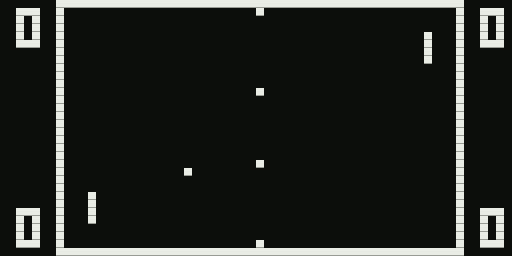
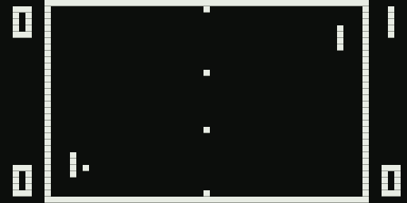

Tennis
Darrel Woolnough · DREAMER no. 16 (1981-12) p. 19 1K RAM


A two-player tennis game with a court, net, racquets and ball, played to five points a game and six games a match. After hitting the ball you must keep your racquet still until the other player returns it. WIN appears on the winner's side.
Keys
Left player: 0 serve/up, C down, 8 in, 4 out. Right player: 3 serve/up, F down, B in, 7 out.
Files
| File | Version | Load | Run |
|---|---|---|---|
| Tennis.d68 | main | 0080-03FF | C000 |
Listing as transcribed (with notes): tennis.txt
Source
DREAMER no. 16 on archive.org, p. 19 (PDF page 21). Author: Darrel Woolnough.
Corrections applied
- Issue 18 'Modification to Tennis' applied (loser's score was not reset after a set): 02DA 10A0, 02DC 10B0, 02DE 0000, 02E0 0000, 02FE 10A8, 0300 22CC, 0302 6B00, 0304 22CC, 0306 7D01, 0308 6E00, 030A 12F0, 033A-033E 0000, plus new code 0090-00BF.
Open doubts
None.